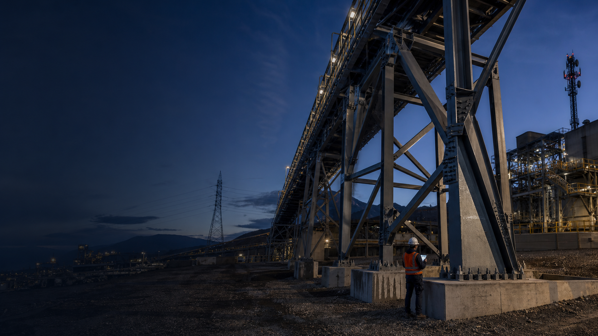
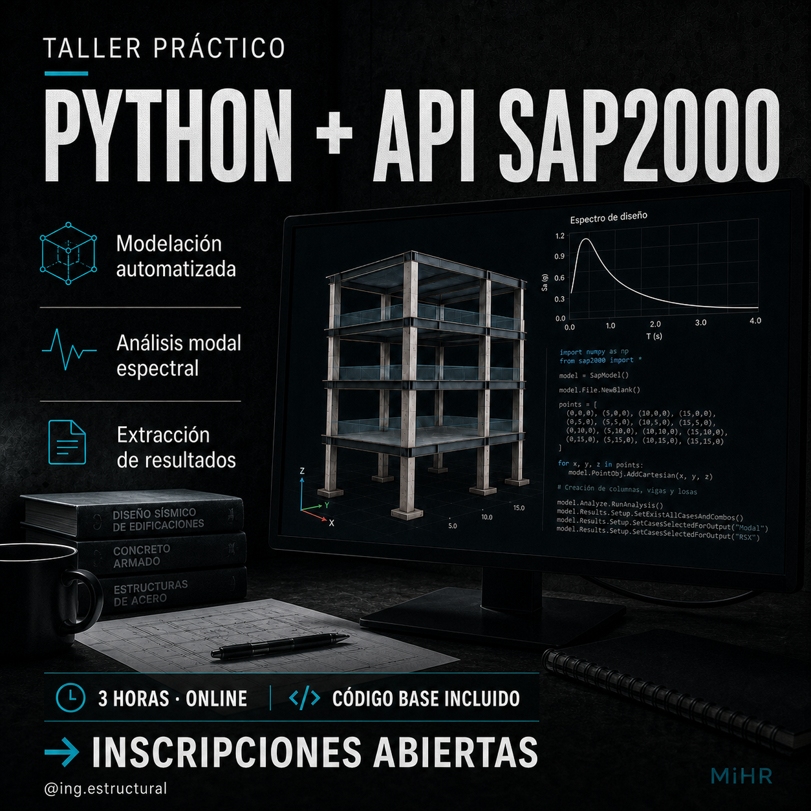
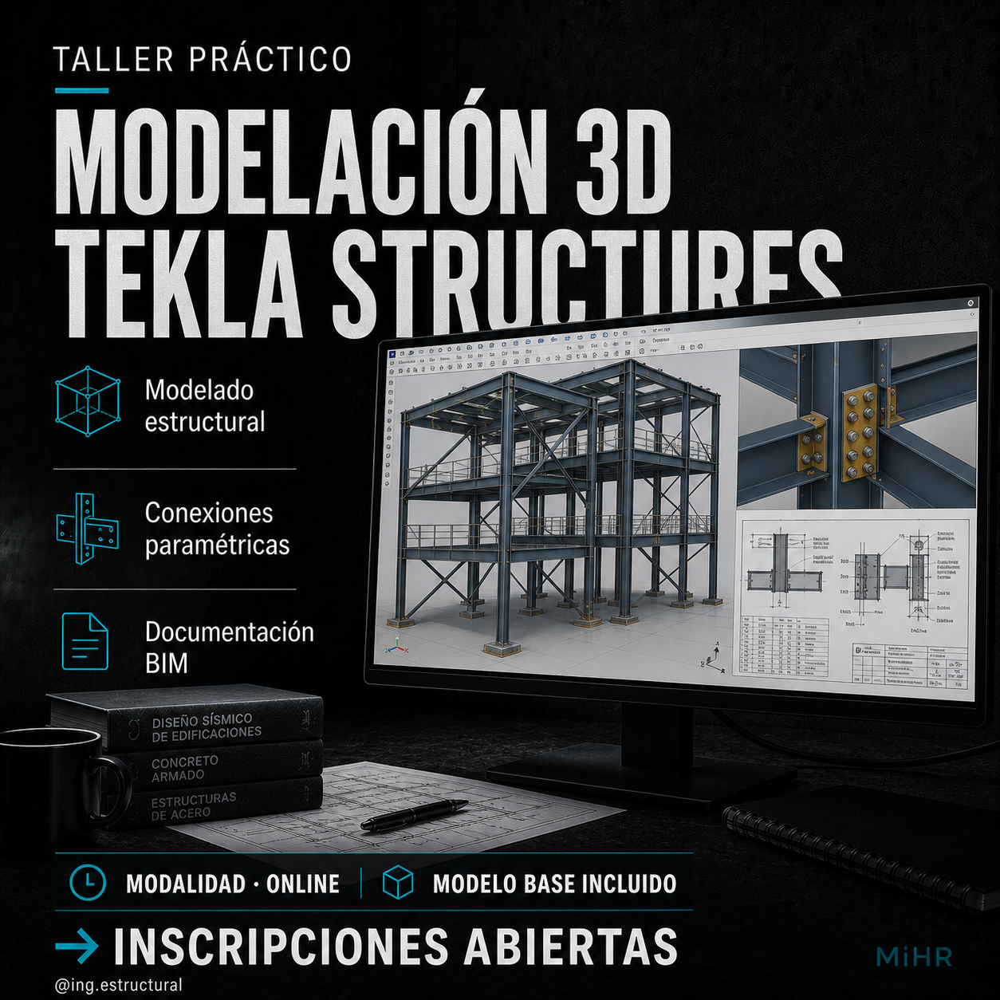
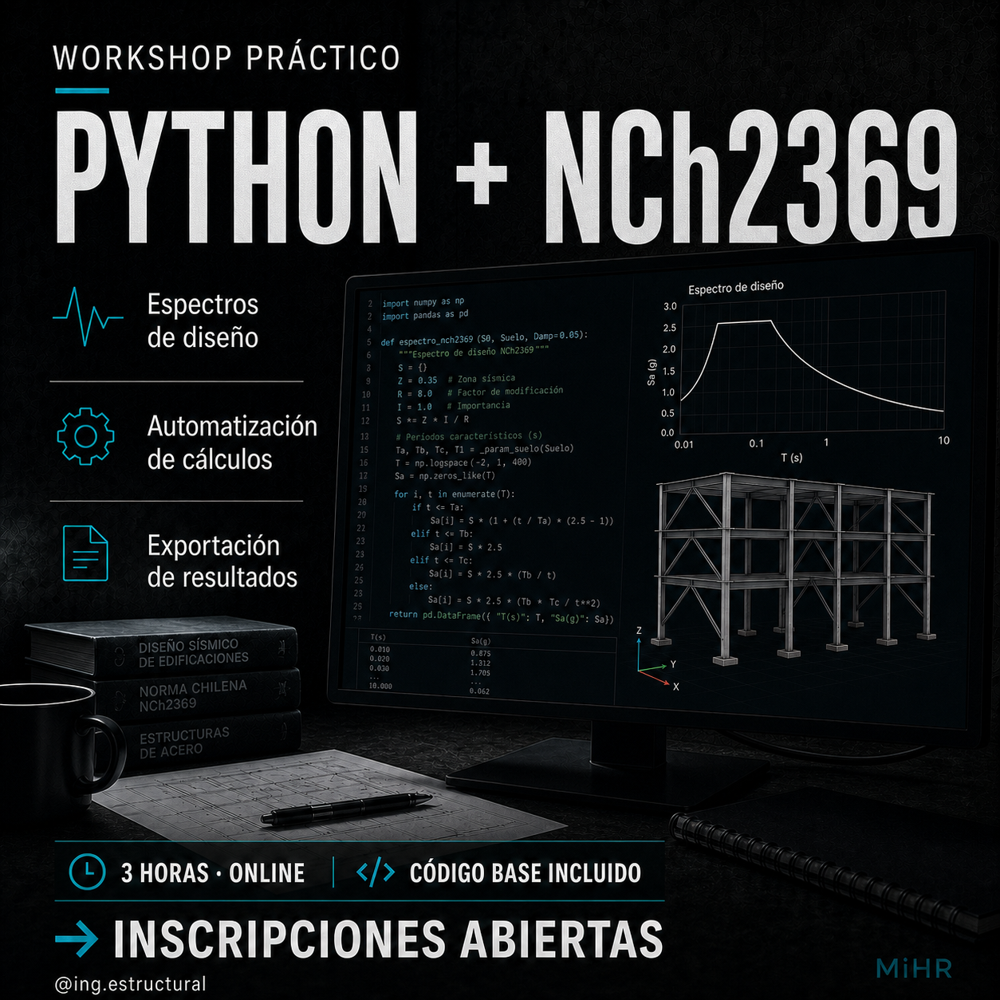

Diseño y análisis estructural
Desarrollo de modelos de cálculo, definición de cargas y combinaciones, análisis, diseño y verificación de acuerdo con la normativa aplicable.

Matías Hernández Rojas
Ingeniería Estructural
Diseño, modelación BIM, evaluación e inspección estructural para proyectos nuevos y estructuras existentes.
Sobre mí
Ingeniero Civil titulado de la Universidad Católica de la Santísima Concepción (UCSC), con experiencia en proyectos de telecomunicaciones, transmisión eléctrica, minería y evaluación de infraestructura existente.
Mi trabajo se enfoca en el análisis y diseño estructural, modelación BIM, evaluación de estructuras existentes e inspección y diagnóstico en terreno. Cada proyecto es abordado mediante una revisión rigurosa de los antecedentes, criterios de diseño, modelos y resultados, buscando entregar soluciones técnicamente fundamentadas y mantener una trazabilidad clara de las decisiones adoptadas.
Complemento mi actividad profesional con asesorías, talleres y capacitaciones dirigidas a estudiantes, profesionales y equipos técnicos, abordando herramientas, metodologías y aplicaciones reales de la ingeniería estructural.
Servicios
Puedo participar en el desarrollo del proyecto, revisar una solución existente o apoyar una etapa específica según las necesidades del encargo.
Desarrollo de modelos de cálculo, definición de cargas y combinaciones, análisis, diseño y verificación de acuerdo con la normativa aplicable.
Desarrollo de modelos tridimensionales para coordinación, visualización y documentación de proyectos estructurales.
Inspección de estructuras y activos críticos, levantamiento de condiciones existentes, identificación de deficiencias y estudio de alternativas de intervención.
Revisión de modelos y memorias de cálculo, resolución de consultas y talleres técnicos para estudiantes, profesionales y equipos de trabajo.
Formación
Talleres enfocados en el uso de herramientas aplicadas a la ingeniería estructural, entre ellas Tekla Structures, SAP2000 y Python. Las fechas de las próximas ediciones se publicarán aquí.

Automatiza la modelación, el análisis y la extracción de resultados en SAP2000 mediante Python.
Ver taller
Introducción práctica al modelado BIM de estructuras de acero.
Ver taller
Trayectoria académica
Artículos en los que he participado, relacionados con comportamiento sísmico, conexiones estructurales y sistemas de almacenamiento.